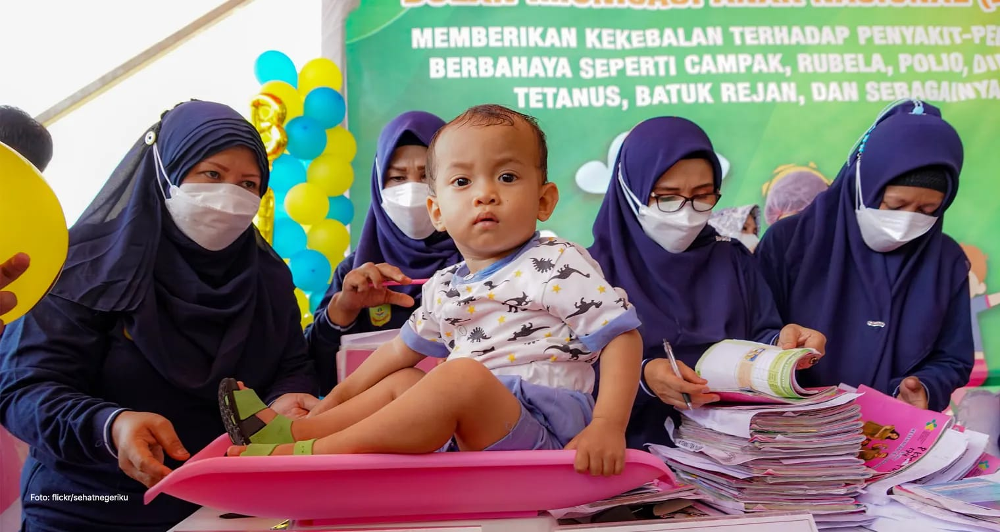
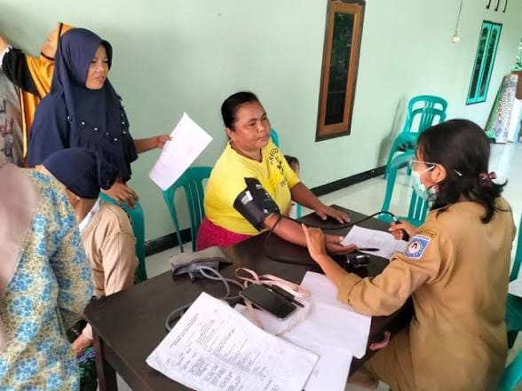

Jadwal Kegiatan Mendatang
Ikuti berbagai kegiatan sosial, pemeriksaan gratis, dan seminar kesehatan publik
| Tanggal & Waktu | Nama Kegiatan | Lokasi / Tempat | Biaya / Pendaftaran | Status |
|---|---|---|---|---|
| 15 Agustus 2026 08.00 - 12.00 WIB |
Aksi Donor Darah & Pemeriksaan Hemoglobin Gratis | Aula Utama SehatBersama | Gratis (Terbuka Umum) | Buka Pendaftaran |
| 22 Agustus 2026 09.00 - 11.30 WIB |
Webinar Edukasi: Pencegahan Hipertensi di Usia Muda | Zoom Online & Live YouTube | Gratis (E-Sertifikat) | Buka Pendaftaran |
| 05 September 2026 06.30 - 09.00 WIB |
Senam Sehat Lansia & Skrining Tulang Sehat | Taman Kota Bersama | Gratis | Segera Dibuka |
Program Unggulan Komunitas

👶 Posyandu & Edukasi Stunting
Program pendampingan gizi ibu hamil dan pemantauan berkala tumbuh kembang anak balita di tingkat kelurahan untuk mencegah stunting sejak dini.

🩺 Posbindu PTM (Penyakit Tidak Menular)
Skrining rutin tekanan darah, gula darah, dan kolesterol secara berkala untuk deteksi dini risiko penyakit kardiovaskular masyarakat.

📢 Penyuluhan Kesehatan Sekolah
Edukasi PHBS (Perilaku Hidup Bersih dan Sehat) serta pemenuhan gizi seimbang bagi siswa SD hingga SMA secara rutin.